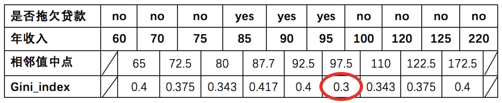

CART 分类决策树¶
学习目标¶
- 了解基尼指数的计算公式
- 了解基尼指数对于不同特征的计算方式
1. Cart树简介¶
Cart模型是一种决策树模型，它即可以用于分类，也可以用于回归，其学习算法分为下面两步：
（1）决策树生成：用训练数据生成决策树，生成树尽可能大
（2）决策树剪枝：基于损失函数最小化的剪枝，用验证数据对生成的数据进行剪枝。
分类和回归树模型采用不同的最优化策略。Cart回归树使用平方误差最小化策略，Cart分类生成树采用的基尼指数最小化策略。
Scikit-learn中有两类决策树，他们均采用优化的Cart决策树算法。一个是DecisionTreeClassifier一个是DecisionTreeRegressor回归。
2. 基尼指数计算公式¶
-
信息增益（ID3）、信息增益率值越大（C4.5），则说明优先选择该特征。
-
基尼指数值越小（cart），则说明优先选择该特征。
3. 基尼指数计算举例¶

3.1 是否有房¶
计算过程如下：根据是否有房将目标值划分为两部分：
- 计算有房子的基尼值： 有房子有 1、4、7 共计三个样本，对应：3个no、0个yes
\(G i n i(\text {是否有房，yes })=1-\left(\frac{0}{3}\right)^{2}-\left(\frac{3}{3}\right)^{2}=0\)
- 计算无房子的基尼值：无房子有 2、3、5、6、8、9、10 共七个样本，对应：4个no、3个yes
\(\operatorname{Gini}(\text {是否有房，no })=1-\left(\frac{3}{7}\right)^{2}-\left(\frac{4}{7}\right)^{2}=0.4898\)
- 计算基尼指数：第一部分样本数量占了总样本的 3/10、第二部分样本数量占了总样本的 7/10：
\(\operatorname{Gini_{-}} i n \operatorname{dex}(D, \text { 是否有房 })=\frac{7}{10} * 0.4898+\frac{3}{10} * 0=0.343\)
3.2 婚姻状况¶
- 计算 {married} 和 {single,divorced} 情况下的基尼指数：
结婚的基尼值，有 2、4、6、9 共 4 个样本，并且对应目标值全部为 no：
\(\operatorname{Gini\_index}(D,\text{{married}})=0\)
不结婚的基尼值，有 1、3、5、7、8、10 共 6 个样本，并且对应 3 个 no，3 个 yes：
\(\operatorname{Gini\_index}(D, \text { {single,divorced} })=1-\left(\frac{3}{6}\right)^{2}-\left(\frac{3}{6}\right)^{2}=0.5\)
以 married 作为分裂点的基尼指数：
\(\operatorname{Gini\_index}(D, \text { married })=\frac{4}{10} * 0+\frac{6}{10} *\left[1-\left(\frac{3}{6}\right)^{2}-\left(\frac{3}{6}\right)^{2}\right]=0.3\)
- 计算 {single} | {married,divorced} 情况下的基尼指数
\(\operatorname{Gini\_index}(D,\text{婚姻状况})=\frac{4}{10} * 0.5+\frac{6}{10} *\left[1-\left(\frac{1}{6}\right)^{2}-\left(\frac{5}{6}\right)^{2}\right]=0.367\)
- 计算 {divorced} | {single,married} 情况下基尼指数
\(\operatorname{Gini\_index}(D, \text { 婚姻状况 })=\frac{2}{10} * 0.5+\frac{8}{10} *\left[1-\left(\frac{2}{8}\right)^{2}-\left(\frac{6}{8}\right)^{2}\right]=0.4\)
- 最终：该特征的基尼值为 0.3，并且预选分裂点为：{married} 和 {single,divorced}
3.3 年收入¶
先将数值型属性升序排列，以相邻中间值作为待确定分裂点：

以年收入 65 将样本分为两部分，计算基尼指数:
\(节点为65时:{年收入}=\frac{1}{10} * 0 + \frac{9}{10} *\left[1-\left(\frac{6}{9}\right)^{2}-\left(\frac{3}{9}\right)^{2}\right]=0.4\)
以此类推计算所有分割点的基尼指数，我们发现最小的基尼指数为 0.3。
此时，我们发现：
- 以是否有房作为分裂点的基尼指数为：0.343
- 以婚姻状况为分裂特征、以 married 作为分裂点的基尼指数为：0.3
- 以年收入作为分裂特征、以 97.5 作为分裂点的的基尼指数为：0.3
最小基尼指数有两个分裂点，我们随机选择一个即可，假设婚姻状况，则可确定决策树如下：

重复上面步骤，直到每个叶子结点纯度达到最高.
4. Cart分类树原理¶
如果目标变量是离散变量，则是classfication Tree分类树。
分类树是使用树结构算法将数据分成离散类的方法。
（1）分类树两个关键点：
将训练样本进行递归地划分自变量空间进行建树‚用验证数据进行剪枝。
（2）对于离散变量X（x1…xn）处理：
分别取X变量各值的不同组合，将其分到树的左枝或右枝，并对不同组合而产生的树，进行评判，找出最佳组合。如果只有两个取值，直接根据这两个值就可以划分树。取值多于两个的情况就复杂一些了，如变量年纪，其值有“少年”、“中年”、“老年”，则分别生产{少年，中年}和{老年}，{少年、老年}和{中年}，{中年，老年}和{少年}，这三种组合，最后评判对目标区分最佳的组合。因为CART二分的特性，当训练数据具有两个以上的类别，CART需考虑将目标类别合并成两个超类别，这个过程称为双化。这里可以说一个公式,n个属性，可以分出(2^n-2)/2种情况。
CART树生成
输入：数据集 \(D\) ，特征 \(A\) ，样本个数阈值、基尼系数阈值
输出：\(CART\)决策树\(T\)
（1）对于当前节点的数据集为\(D\)，如果样本个数小于阈值或者没有特征，则返回决策子树，当前节点停止递归；
（2）计算样本集\(D\)的基尼系数，如果基尼系数小于阈值，则返回决策树子树，当前节点停止递归；
（3）计算当前节点现有的各个特征的各个特征值对数据集\(D\)的基尼系数；
（4）在计算出来的各个特征的各个特征值对数据集\(D\)的基尼系数中，选择基尼系数最小的特征\(A\)和对应的特征值\(\alpha\)。根据这个最优特征和最优特征值，把数据集划分成两部分\(D_1\)和，\(D_2\)同时建立当前节点的左右节点，左节点的数据集\(D\)为\(D_1\)，右节点的数据集\(D\)为\(D2\)；
（5）对左右的子节点递归的调用前面1-4步，生成决策树。
CART树剪枝
我们知道，决策树算法对训练集很容易过拟合，导致泛化能力很差，为解决此问题，需要对CART树进行剪枝。CART剪枝算法从“完全生长”的决策树的底端剪去一些子树，使决策树变小，从而能够对未知数据有更准确的预测，也就是说CART使用的是后剪枝法。一般分为两步：先生成决策树，产生所有可能的剪枝后的CART树，然后使用交叉验证来检验各种剪枝的效果，最后选择泛化能力好的剪枝策略。
2.3 使用CART算法构建决策树¶
import numpy as np
import matplotlib.pyplot as plt
from sklearn import datasets
iris = datasets.load_iris()
X = iris.data[:,2:]
y = iris.target
from sklearn.tree import DecisionTreeClassifier
#注意：此处传入的是"gini"而不是"entropy"，默认criterion='gini'
tree = DecisionTreeClassifier(max_depth=2,criterion="gini")
tree.fit(X,y)
def plot_decision_boundary(model,axis):
x0,x1 = np.meshgrid(
np.linspace(axis[0],axis[1],int((axis[1]-axis[0])*100)).reshape(-1,1),
np.linspace(axis[2],axis[3],int((axis[3]-axis[2])*100)).reshape(-1,1)
)
X_new = np.c_[x0.ravel(),x1.ravel()]
y_predict = model.predict(X_new)
zz = y_predict.reshape(x0.shape)
from matplotlib.colors import ListedColormap
custom_map = ListedColormap(["#EF9A9A","#FFF59D","#90CAF9"])
plt.contourf(x0,x1,zz,linewidth=5,cmap=custom_map)
plot_decision_boundary(tree,axis=[0.5,7.5,0,3])
plt.scatter(X[y==0,0],X[y==0,1])
plt.scatter(X[y==1,0],X[y==1,1])
plt.scatter(X[y==2,0],X[y==2,1])
plt.show()

分析上图可知:

-
X[1] <=0.8 作为第一次分割的依据，满足条件的所有样本均为同一类别，gini系数为0.667
-
X[1]>0.8的，依据 X[1]<=0.75 为划分依据
5. 小结¶
- 基尼指数也是一种用于计算模型优先使用哪个特征进行树分裂
- 使用基尼指数构建的决策树成为 CART 决策树